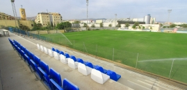
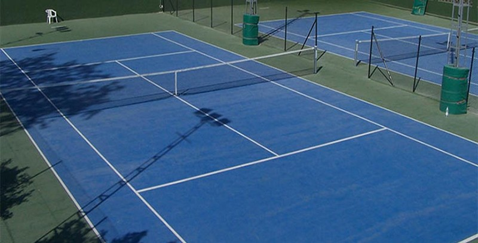

Ciudad Deportiva de la Federación Malagueña

ESTADIO ACTUAL: Ciudad Deportiva
Federación Malagueña (Málaga)
CAPACIDAD: 1.500 espectadores
AÑO DE INAUGURACION: 1990
Calle Max Estrella 1, Malaga
Club el Candado
El Real Club El Candado es un club situado en la capital de la provincia malagueña, en su zona este. Sus instalaciones cuentan con 7 pistas de pádel, 5 pistas de tenis, gimnasio, varias piscinas y cancha de baloncesto. Organizan cursos y eventos durante todo el año, destacando el evento orientado a los más pequeños llamado "Multideporte" celebrado durante los meses de julio y agosto.
PRODUCTOS DE DEPORTES DE PELOTA
RAQUETA BABOLAT PURE DRIVE (300 GR)
Desde hace más de 20 años, la Pure Drive 300 g, modelo emblemático de la marca francesa Babolat, es LA raqueta reconocida por su perfecta combinación entre control y potencia. Su color azul, negro y blanco de esta Pure Drive es elegante y moderna. Dos tecnologías mejoran a este modelo: el FSI Power y el Cortex Pure Feel que aportan aún más de sensaciones y potencia en el golpe.
RAQUETA DUNLOP SRIXON FX 500 LITE (270 GR)
Las raquetas Dunlop FX establecen un nuevo punto de referencia en cuanto a potencia y están diseñadas para todo tipo de jugadores, desde el nivel intermedio hasta el avanzado y para todas las edades. Un modelo trabajado que ofrece un diseño elegante en azul y negro, condensado de potencia y confort, que garantiza la máxima sensación de juego gracias a las tecnologías innovadoras.
ZAPATILLAS ADIDAS ADIZERO UBERSONIC 4 CAMO TODAS LAS SUPERFICIES
La zapatilla adidas Adizero Ubersonic 4 saca lo mejor de las versiones anteriores para ofrecer un modelo exitoso tanto estética como técnicamente. El empeine se ha depurado para ofrecer la máximo confort, mientras que la suela intermedia se ha rediseñado para proporcionar una amortiguación aún mejor a los jugadores ofensivos que quieren una zapatilla ligera que les acompañe en sus desplazamientos. El diseño "Top Secret" de esta versión de edición limitada presenta un motivo de cebra con un logo amarillo fluorescente y un toque de irisación.
Balón Uefa
Balón de fútbol oficial adidas de la próxima edición de la Liga de Naciones. Este balón, con el que jugarán las selecciones europeas, presente un diseño en color blanco con estampados dinámicos en 5 colores en el que destaca el color negro. Un balón para entrenar y conseguir llegar a lo más alto.
Minibalon Nike Jordan
Minibalón de Nike inspirado en el jugador de baloncesto Michael Jordan.
Puma Future 6.1 Netfit Ag
El momento ha llegado con las nuevas Puma Future 6.1 en color rosa con detalles en color negro en la malla superior y en la suela. Una nueva versión del icónico modelo de la marca que destaca por su acabado premium, sus tacos cónicos y su innovadora forma de ajuste gracias a la tecnología NETFIT. Con su adaptación al pie, no habrá nadie más ágil y rápido sobre el campo. Serás el centro de todas las miradas.
adidas Predator 20.3 Messi Fg
Las zapatillas de fútbol adidas Predator 20.3 para chico vuelven con un diseño eléctrico en un color negro con parte frontal en color verde lima. Se trata de unas botas de tacos que cuentan con la tecnología Control Skin protege toda la carcasa ofreciendo máxima adherencia y control del balón. Así como un ajuste superior gracias a su calcetín en la zona del tobillo para toda la temporada.